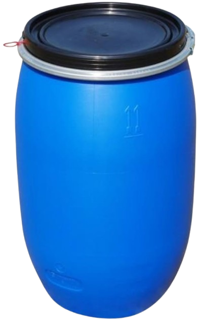
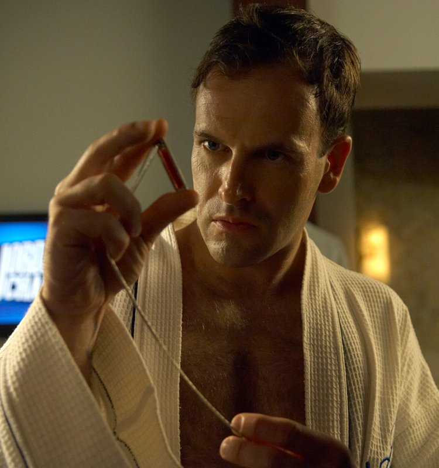

CRIME SCENE EVIDENCE

REPERTO A: I BARILI REPERTO B: IL CIONDOLO CON IL SANGUE DI EMILY BIRCH
REPERTO B: IL CIONDOLO CON IL SANGUE DI EMILY BIRCH



KILLER PROFILE
CRIME SCENE EVIDENCE

REPERTO A: I BARILI
REPERTO B: IL CIONDOLO CON IL SANGUE DI EMILY BIRCH
La quinta stagione trascina Dexter Morgan nei meandri di un trauma condiviso e di una vendetta privata. Nel tentativo di superare il lutto che ha devastato la sua vita, Dexter si imbatte in Lumen Pierce, l'unica vittima sopravvissuta a un gruppo di stupratori e assassini seriali organizzati. Questa scoperta rivela l'esistenza di una rete sotterranea di violenza metodica, i cui crimini vengono occultati sigillando i corpi delle vittime all'interno di barili di bauxite abbandonati nelle paludi della Florida.
A capo di questa cerchia dell'orrore si trova Jordan Chase, un guru motivazionale di fama mondiale, venerato da milioni di persone per i suoi discorsi sulla forza interiore e sul superamento del dolore. Jordan è un predatore atipico: dotato di un carisma magnetico e di una dialettica impeccabile, non si sporca quasi mai le mani con il sangue. Il suo vero potere risiede nella manipolazione psicologica totale che esercita fin dall'infanzia sui suoi storici amici (Boyd Fowler, Dan Mendell, Cole Harmon e Alex Tigh), usati come veri e propri strumenti biologici per sfogare i propri istinti più sadici.
Jordan Chase trasforma il dolore e la sottomissione in un business e in una filosofia di vita, riassunta nel suo celebre slogan "Take it!". Dexter si ritrova a dover combattere un nemico protetto da guardie del corpo, avvocati e telecamere, ma questa volta non è solo: Lumen diventa la sua complice e la sua alleata in una caccia spietata, intenzionata a eliminare uno a uno tutti i membri della cerchia di Chase per riprendersi la propria vita.
La firma di Jordan Chase non si trova sulle Scene del Crimine, ma nella mente dei suoi esecutori, una dinamica che richiede una precisione investigativa diversa dal solito.
La Catena di Comando: Jordan seleziona le vittime e pianifica la logistica dei rapimenti attraverso i suoi contatti, lasciando che siano gli altri membri della gang a compiere le torture fisiche all'interno di un vecchio campo scout isolato, mentre lui osserva e dirige il climax emotivo.
I Barili di Bauxite: Una volta consumato il delitto, i corpi vengono immersi nella bauxite chimica dentro barili di metallo industriali. Questa sostanza accelera la decomposizione e neutralizza gli odori, rendendo i fusti indistinguibili dai normali rifiuti tossici delle paludi.
Il Sangue al Collo: Come trofeo supremo del suo controllo, Jordan indossa un ciondolo contenente una fiala con il sangue della sua primissima vittima, Emily Birch, la donna che ha segnato la nascita dell'intera cerchia criminale e che Jordan continua a ricattare e manipolare fino alla fine.
La caccia a Jordan Chase si conclude proprio nel luogo dove tutto è iniziato: il campo scout abbandonato. Qui, l'armatura di parole e fama del motivatore si sgretola di fronte alla determinazione di Lumen e alla freddezza del tavolo di plastica di Dexter. Jordan scoprirà a sue spese che non tutti i traumi possono essere trasformati in un discorso di successo, e che il tempo a sua disposizione è definitivamente scaduto.
"Tick Tick Tick ⌚, questo è il suono della tua vita che sta per finire"